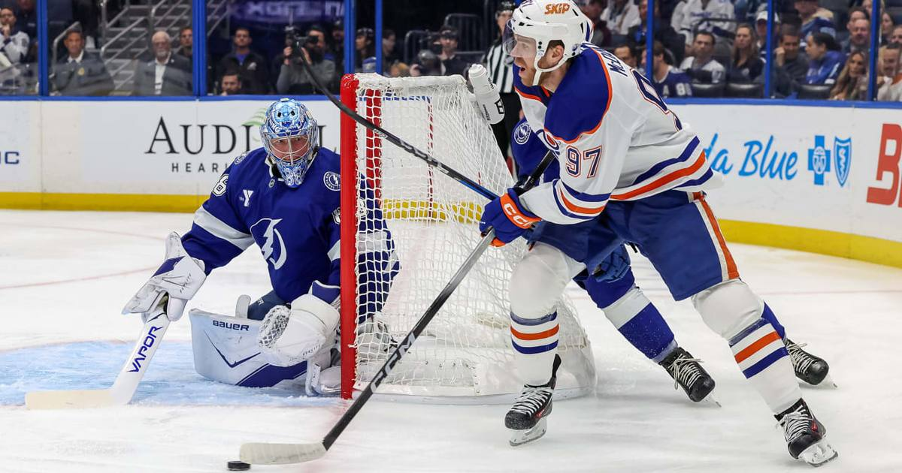

McDavid's 23-game point streak ends in Tampa
Tampa Bay held Connor McDavid off the scoresheet for the first time all season, ending his 23-game point streak — tied with Wayne Gretzky for the fourth-longest in NHL history — in a 3-1 Lightning win.

Disclosure: this post contains affiliate links. I earn a commission on qualifying purchases.
Connor McDavid's season-opening point streak is over. The Tampa Bay Lightning held the Edmonton Oilers captain without a goal or an assist for the first time all season, ending the run at 23 games in a 3-1 win on Thursday night at Benchmark International Arena.
The run produced 55 points — 13 goals and 42 assists — and McDavid still leads the NHL in scoring. But Tampa became the first team this season to keep him off the scoresheet, and the Oilers' six-game winning streak went down with it.
How Tampa shut him down
The Lightning matched their checking line against McDavid all night. Anthony Cirelli centered a line with Ilya Mikheyev and Pontus Holmberg, and the trio held the league's scoring leader to two shots on goal in 22:57 of ice time.
Edmonton actually controlled the early going, outshooting Tampa 7-3 in a scoreless first period. The Lightning's penalty kill handled Edmonton's first two power plays, then the home side struck on its own man advantage late in the second: Brayden Point fed Jake Guentzel below the goal line, Guentzel worked around the net, and John Carlson's one-timer found the top corner with 6:31 left in the period.
Mikheyev made it 2-0 at 10:46 of the third, burying the rebound after Erik Cernak's initial chance was stopped. Nikita Kucherov added a breakaway goal less than four minutes later to make it 3-0. Colton Dach spoiled Andrei Vasilevskiy's shutout bid with 1:36 left, but that was all Edmonton could manage.
John Carlson (TBL, PP): 2nd, 13:29; TBL 1-0
Ilya Mikheyev (TBL): 3rd, 10:46; TBL 2-0
Nikita Kucherov (TBL): 3rd, 14:29; TBL 3-0
Colton Dach (EDM): 3rd, 18:24; TBL 3-1
Vasilevskiy stopped 23 of 24 shots. Levi made 17 saves for Edmonton, which went 0-for-3 on the power play and lost in regulation on the road for the first time this season (10-1-1).
Where the run sits in history
The streak ends tied with Wayne Gretzky's 1988-89 run for the fourth-longest point streak in NHL history. The only longer ones belong to Gretzky's 51-game run in 1983-84 — the record — and the two runs between it and this one. McDavid needed seven more games to reach the next spot on the list.
What made it stand out wasn't just the length. It was a season-opening streak: McDavid had a point in every game Edmonton played, from opening night through mid-November, while the Oilers built a 17-4-3 record and the league's best road mark. Tampa didn't just end the streak — it handed Edmonton its first regulation road loss and snapped a six-game winning streak in the same night.
The Lightning, meanwhile, keep rolling at home. The win moved Tampa to 15-5-2 overall and 10-1-0 at Benchmark International Arena, with four wins in its past five games.
Edmonton gets a quick chance to start a new one: the Oilers open a weekend back-to-back Saturday afternoon against the Carolina Hurricanes.
Watch
Source: Oilers vs. Lightning | NHL Highlights | Nov 19, 2026 (NHL) — full-game highlights from the matchup, with Carlson's power-play goal, Mikheyev's winner and Kucherov's breakaway.
Gear up: Oilers gear (McDavid jerseys, apparel): via Fanatics